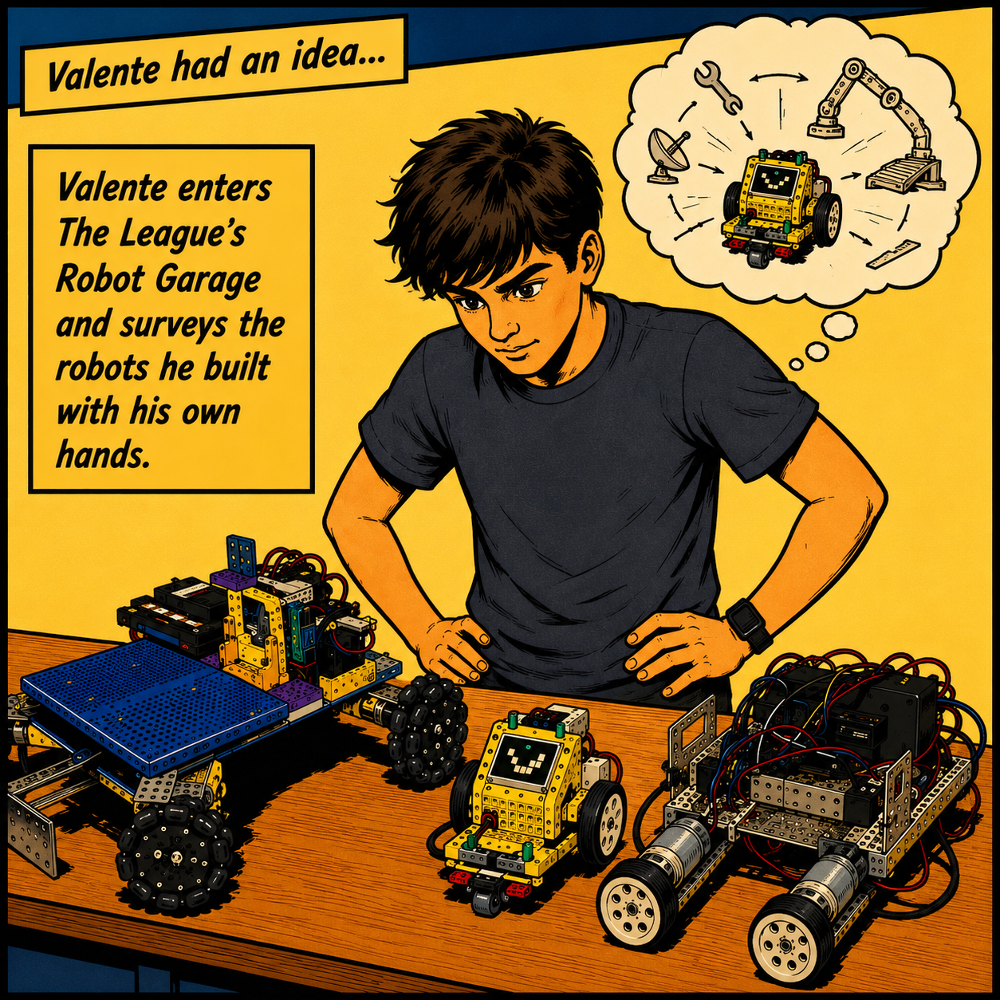
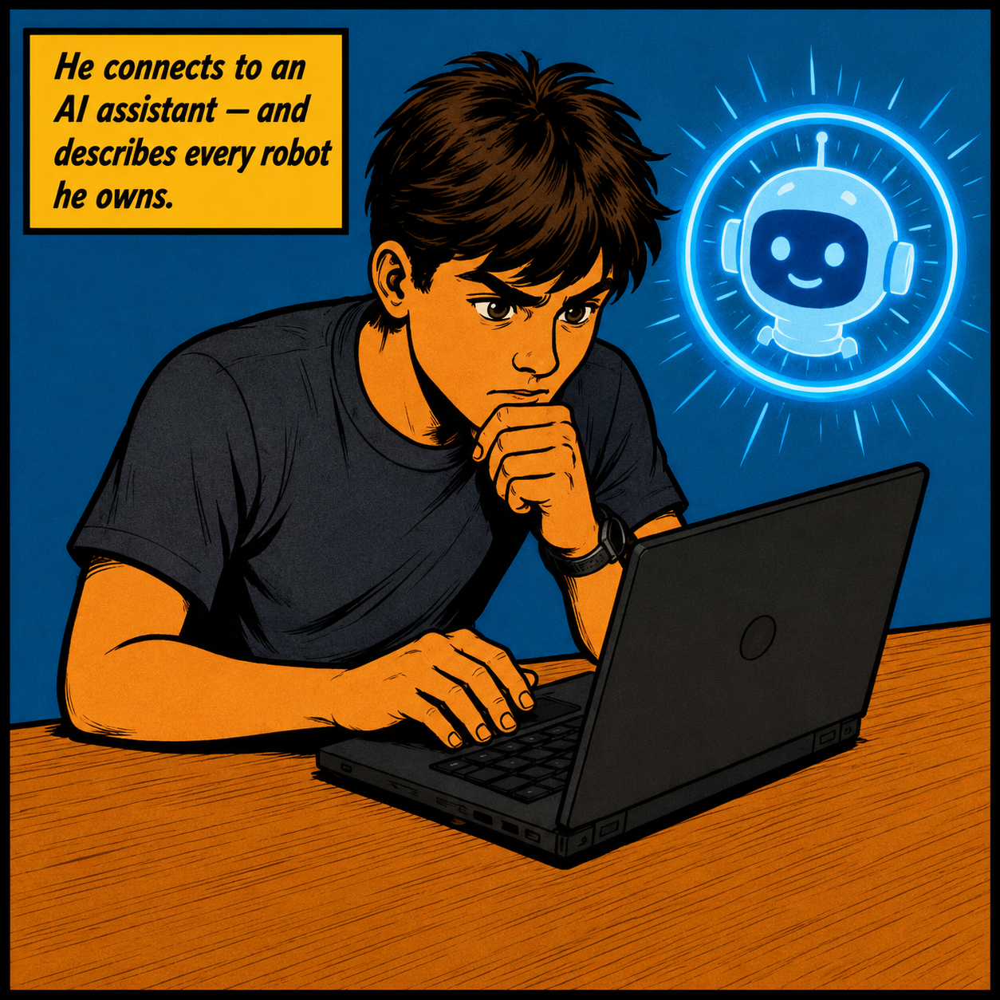
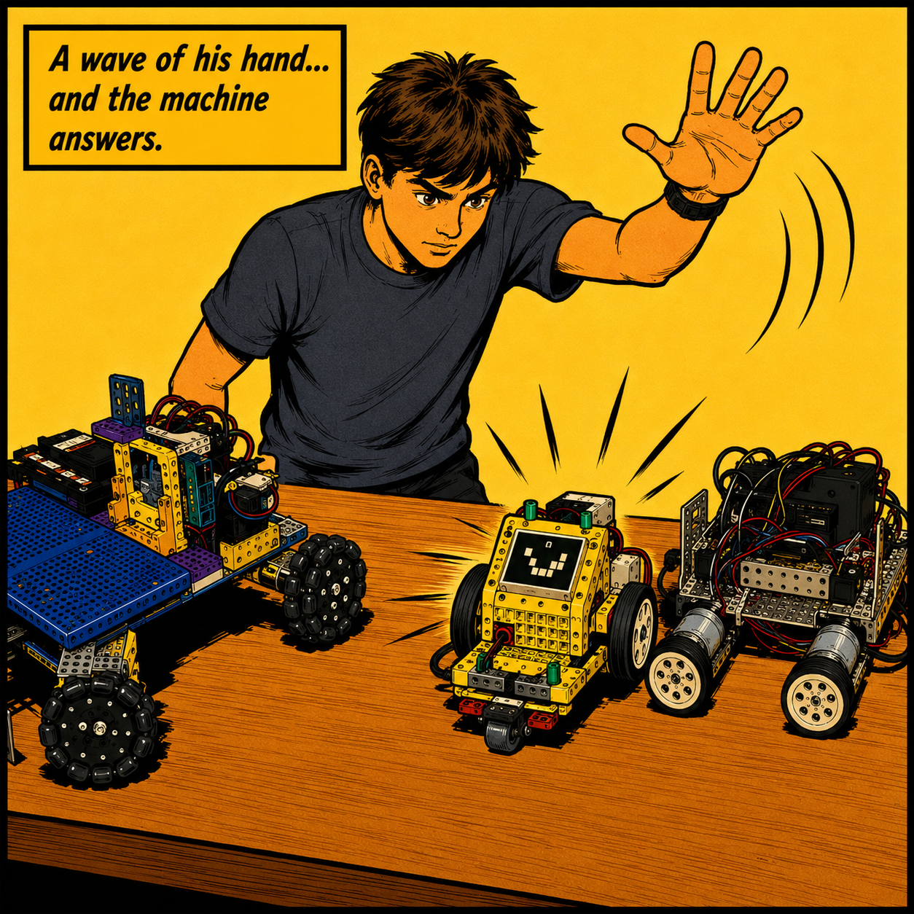
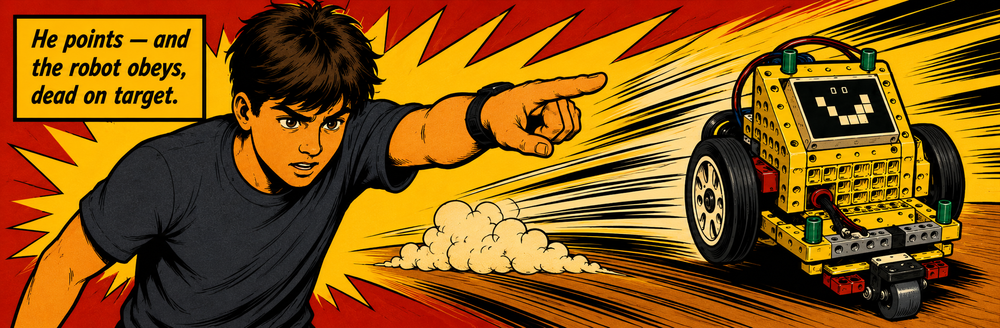

That single question is the heart of League Labs — a summer program at The League of Amazing Programmers where students learn to use artificial intelligence to bring robots to life. From small LEGO builds to full-size FIRST Tech Challenge (FTC) competition machines, the goal is the same: understand a robot down to the metal, then teach it to listen.

Teaching the machine to teach itself
At League Labs, students don’t just write code for robots — they work alongside Claude Code, an AI assistant, teaching it to discover what hardware a robot actually has and to figure out how to drive it around. It’s a blend of many technologies woven together, with the student as the architect and the AI as a tireless pair of hands.
The group meets online once a week to compare notes and tackle problems together. On weekends, everyone gathers in the Robot Garage — a real workshop full of robots, tools, serial cables, and half-finished experiments — to get their hands dirty.

Real robotics, all the way down
This is hands-on, low-level engineering — the kind of detail most robotics teams never slow down to teach. League Labs students dig into the systems that make a robot actually know where it is and do what it’s told:
- Radio communications & serial ports How robots and computers really talk to each other.
- The Robot Operating System (ROS) The framework that ties a robot’s many parts together.
- FIRST Robotics (FRC) code architecture Studying real competition code to see how robotic systems are designed.
- Odometry — especially optical-flow odometry Measuring motion to track a robot’s position over time.
- Encoders & localization Knowing exactly where your robot is, not just roughly.
- Kinematics The math that turns “go there” into wheel and motor commands.
- Robotic vision — and later, stereo vision & point-cloud LiDAR Giving robots eyes, then depth, then a 3-D map of the world.

Built by students, driven by curiosity
League Labs isn’t a class — it’s a workshop. The program is deeply project-based and flexible: students pick their own projects and chase the questions that fascinate them, with mentors there to guide rather than lecture.
The payoff is a much more sophisticated, solid foundation in how robotics really works — the low-level, hands-on understanding that turns a kid who follows a build guide into an engineer who can design a robot from scratch. He points — and the robot obeys, dead on target.
League Labs runs all summer, online every week and in the Robot Garage on weekends.
Explore League Labs »